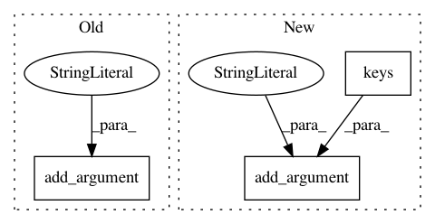

7d96731b9a50e5455a1e31f676508af42801b7ae,examples/deeplab/tf2npz.py,,main,#,184
Before Change
def main():
parser = argparse.ArgumentParser()
parser.add_argument("model", choices=["xception65"])
parser.add_argument("task", choices=["voc"])
parser.add_argument("graph_path")
parser.add_argument("output")
args = parser.parse_args()
After Change
def main():
parser = argparse.ArgumentParser()
parser.add_argument("model", choices=list(_model_class.keys()))
parser.add_argument("task", choices=list(_n_class.keys()))
parser.add_argument("graph_path")
parser.add_argument("output")
args = parser.parse_args()
In pattern: SUPERPATTERN
Frequency: 3
Non-data size: 3
Instances
Project Name: chainer/chainercv
Commit Name: 7d96731b9a50e5455a1e31f676508af42801b7ae
Time: 2019-01-23
Author: 69guitar1015@gmail.com
File Name: examples/deeplab/tf2npz.py
Class Name:
Method Name: main
Project Name: dmlc/gluon-nlp
Commit Name: 02c0ef855321a2c9e681927b9cdaf0996c310893
Time: 2020-10-14
Author: xshiab@connect.ust.hk
File Name: tools/batch/submit-job.py
Class Name:
Method Name:
Project Name: chainer/chainercv
Commit Name: 0557b8abe6df2bae50bbda83478762ab96ec25ba
Time: 2019-05-17
Author: shingogo@hotmail.co.jp
File Name: examples/semantic_segmentation/eval_semantic_segmentation_multi.py
Class Name:
Method Name: main